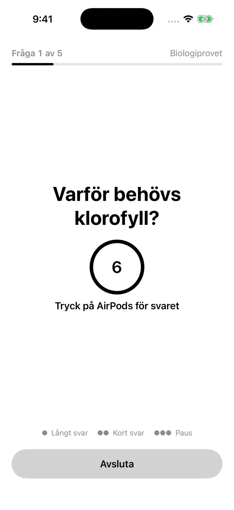
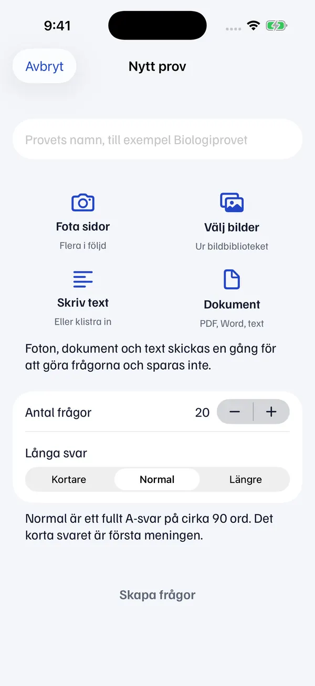
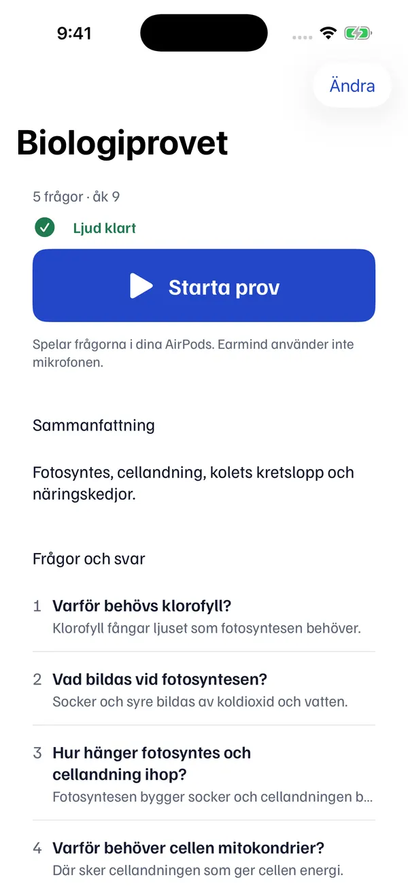

Plugga med AirPods utan att röra mobilen.
Fota materialet. Få provfrågor med A-svar.
Mejla mig när appen finnsAppen är inte ute än.

Tre steg.
Sedan ligger telefonen i fickan.
- 1
Fota materialet
Sidor ur boken, bilder, en PDF eller text. Fotona sparas inte.

- 2
Få frågor med A-svar
Korta provfrågor, med ett kort och ett långt svar. Ändra det du vill.

- 3
Tryck Starta prov
Frågorna läses upp i dina AirPods. Du svarar i huvudet.
Styr med ett tryck.
Ett tryck på AirPods ger hela svaret. Två ger det korta. Tre pausar.
- Ingen mikrofon.Starta prov lyssnar inte. Det bara läser upp.
- Samma ordning varje varv.När listan är slut börjar den om.
- Dela med klassen.Samma frågor, svar och ljud.
Vill du ha appen?
Den är inte ute än. Skriv din e-post, så mejlar vi när den finns.